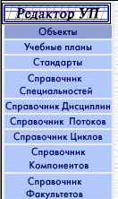
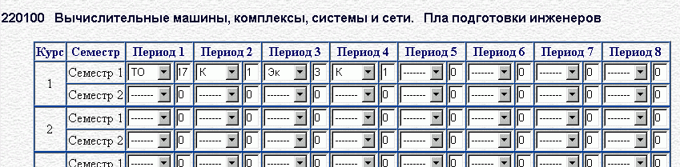

Работа с учебными планами
Содержание
О Программе
Создание учебного плана
Редактирование содержания учебного плана
Редактирование графика учебного процесса
Получение отчета в формате RTF
О Программе
Данная программа предназначена для работы с учебными планами.
Она позволяет вводить сведения об учебных планах в базу данных и получать
отчеты на основе этих сведений.
Если у вас есть вопросы или замечания по работе программы, пожалуйста
оставьте ваше сообщение в разделе "Замечания и прдложения".
Программирование и дизайн
Всеволод Корнышев
Анна Карпова
Создание учебного плана
Первым действием при работе с Учебным Планом(УП) является его создание.
Для того, чтобы создать новый УП выберите в меню объекты, находящегося
в левой верхней части окна, пункт Учебные планы. Вы окажитесь на странице
предназначенной для работы с УП (Именно эта страница открывается при входе
в программу).

Затем в меню действия, находящемся также в левой части окна программы,
выберите пункт "Создать новый УП".
Вы перейдете на страницу для ввода основных сведений об УП.
Введите название УП, выберите форму обучения. Затем из предлагаемого списка
выберите нужную специальность.
Если вы работаете в Internet Explorer, то после того, как вы выберете специальность
поля "Срок обучения" и "Номер начального курса" заполняться автоматически.
Если поля "Срок обучения" и "Номер начального курса" остались не заполненными,
или выбранные значения не подходят для вашего УП, то введите в эти поля свои
значения. После того, как вы заполните все поля нажмите кнопку "Дальше".
После этого вы перейдете на страницу содержащую форму, для редактирования
Груфика Учебного Процесса. Эта форма представляет собой таблицу,
Строки которой соответствую курсам и семестрам обучения, а столбцы периодам,
на которые разбивается это обучение. Предпологается, что данных периодов не
может быть больше 8 в семестре.
Каждая клетка таблицы представляет собой сведения о таком периоде и
состоит из двух элементов: выподающего списка и поля для ввода числа.
Выпадающий список содержит сокращенное обозначение периода обучения.
Например: ТО - теоритическое обучение, К - каникулы, Эк - экзамены, ...
Полный список всех возможных периодов с сокращениями приведен внизу страницы.
Числовое поле обозначает продолжительность преиода в неделях. Так как в
продолжительность учебног года 52 недели, то сумма
продолжительностей всех периодов одного семестра не должна превышать 52.
Например, если График Учебного Процесса за первый семестр обучени содержит
17 недель теоретического обучения, 1 неделю каникул
3 недели экзаменационной сессии и еще 1 неделю каникул
каникул, то форму следует заполнить следующим образом:

Поумолчанию все периоды обозначены как неуществующие,
и их продолжительность равна 0.
Данную форму не обязательно сразу же заполнять, это можно сделать и позднее,
после создания УП.
Для создания вашего УП, т. е. занесения сведений о нем в базу данных нажмите
кнопку "Создать новый план".
После этого вы окажетесь на странице которая содержит список всех УП
содержащихся в базе данных. Среди них вы можете выбрать свой УП для дальнейшей
работы с ним.
Редактирование содержания учебного плана
Для добавления в учебный план дисциплин или редактирования уже имеющихся
перейдите на страницу "Выбор учебного плана", выбрав в меню "Объекты" пункт
"Учебные планы". Затем из прадлагаемого списка выберите учебный план, который
вы хотите отредактировать.
Затем в нажмите кнопку "Редактировать содержание УП" в нижней части окна.
Вы окажетесь на странице, предназначенной для просмотра
и редактирования дисциплин учебного плана. Для удобства дисциплины
сгруппированы по циклам. Переходить между циклами дисциплин можно
нажимая на соответствующие ссылки с названиями циклов.
Каждая отдельная запись сооответствуе одной дисциплине в опредленном
семестре.
Первый столбец таблицы прдназначен для выбора записей при удалении.
Второй столбец содержит название дисциплины.
Третий столбец содержит сокращенное название цикла дисциплины.
Нужный код цикла можно выбрать из выпадающего списка.
Полные названия циклов дисциплин можно посмотреть в справочнике циклов,
там же можно добавить новые циклы, отредактировать данные
об уже существующих.
Четвертый столбец содержит сокращенное название компонента дисциплины.
Для редактирования кода компонета следуетв выбрать нужный код из выпадающего
списка.
Полные названия компонентов, как и циклов, можно посмотреть
в справочнике компонентов.
Пятый столбец содержит поле для ввода номера в компоненте.
Поля код цикла, код компонента и номер в компоненте являются общими для всех
дисциплин с одним названием. При изменении данных свойств у одной из записей
эти поля также автоматически изменяться и у остальных полей.
Шестой столбец содержит номер семестра, который можно выбрать из
выпадающего списка. Номер семестра обученичя ограничен рамками
графика учебного процесса. Сочетание название дисциплины и номер семестра
является униклальным для данного плана, и в списке дисциплин не может быть
двух записей с одинаковым названием дисциплины и номером семестра.
Седьмой - Десятый столбцы содержат иныормацию об экзаменах, зачетах, курсовых
проектах и курсовых работах. Например, чтобы показать, что в данном семестре
по данной дисциплине есть экзамен следует поставить галочку на пресечении
столбца экзаменов и соответствующей строки.
Одинадцатый и Двенадцатый столбцы содержат информацию о количестве
расчетно графических работ и рефератов в семестре, по умолчанию - 0.
Тринадцатый - Пятнадцатый столбцы содержат сведениыя о количестве
лекций, лабораторных и практических работ в семестре, по умолчанию - 0.
Шестнадцатый столбец содержит сведения об общем объеме часов.
Семнадцатый столбец содержит сокращенное название кафедры ведущей дисциплину,
которое можно выбрать из выпадающего списка.
Последний столбец содержит поле, определяющее учитывать ли занятия
по дисциплине при подсете общей нагрузки. Поумолчанию все дисциплины
учитываются при подсчете. Они отмечены галочкой, для неучитываемых дисциплин,
например, физвоспитание, галочку следует убарть.
Последние три поля также являются общими для записей с одним названием
дисциплины - записи соответствующие одной дисциплине. При изменении такого поля
у одной из записей дисциплины они автоматически изменяться и у других записей
этой дисциплины.
Для того чтобы все изменения были внесены в базу данных наужно нажать кнопку
"Внести изменения". Если требуется отменить изменения, то следует нажать
кнопку "Отменить изменения".
Для добавления записей нажмите кнопку внизу страницы
"Добавить в план ноую запись". Откроется страница с формой для добавления
учебного плана. Сначала из предоставленного списка выберите цикл к которому
будетотносится дисциплина. Затем заполните форму, аналогичную по содержанию
строке основной таблицы, единственным различием является то, что в первой
строке таблицы следует выбрать название дисциплины.
После заполнения формы нажмите кнопку "Внести дисциплину в учебны план".
Перед этим вы можете выбрать следует ли после добавления дисциплины вернуться
к редактированию содержания учебного плана или остаться на данной странице
для добавления еще одной дисциплины.
Если в списке дисциплин не оказалось нужной вам дисциплины, то выберите
пункт "Добавить дисциплину" в меню "Действия". Откроется страница для
добавления в новой дисциплины. Введите название дисциплины и выберите ведущую
кафедру которая будет использоваться по умолчанию
при добавлении дисциплины в учебный план.
Здесь также можно добавить ссылку на файл стандарта дисциплины. После
заполнения форму нажмите кнопку "Добавить дисциплину в список дисциплин".
После этого вы вернетесь на страницу страницу добавления записи в
учебный план.
Для удаления записей из базы данных, отметьте нужные строки записей
галочками в крайнем левом столбце, а затем нажмите кнопку
"Удалить помеченные записи" внизу страницы. Отмеченные
записи будут безвозвратно удалены из базы данных и их удаление нельзя будет
отменить.
Редактирование графика учебного процесса
Для редактирования графика учебного процесса перейдите на страницу
"Выбор учебного плана" для этого выберити в меню "Объекты" пункт
"Учебные планы". Затем из прадлагаемого списка выберите учебный план,
график которого вы хотите отредактировать.
Затем нажмите кнопку "Редактировать график учебного процесса" внизу
страницы.
Отроется страница редактирования графика учебного процесса.
Здесь можно изменить номер начального курса и срок обучения.
А также изменить содержание графика учебного процесса. Более подробно этот
процесс описан в разделе "Создание учебного плана".
Вслучае, когда в результате изменения начального курса или срока обучения
некоторые курсы удаляются из графика учебного процесса, информация о них
теряется необратимо. При этом дисциплины удаленных курсов также
будут удалены из учебного плана. Например если номер начального курса
был равен 1 а срок обучения 5, а затем номер начального курса изменили
на 2, а срок обучения на 3, то информация о графике учебного процесса
первого и пятого курса будет потеряна, а из учебного плана будут удалены все
дисциплины 1, 2, 9 и 10 семестров.
Получение отчета в формате RTF
Перейдите на страницу "Выбор учебного плана" для этого выберити в
меню "Объекты" пункт "Учебные планы".
Из прадлагаемого списка выберите нужный учебный план.
Затем нажмите кнопку "Экспорт в формат RTF" или
"Расширенный экспорт в формат RTF" внизу страницы.
Расширенный экспорт отличается от обычного тем, что в случае расширенного
экспорта в отчете показывается разделение занятий на лекции, лабораторные
работы и практики.
После этого должна октрыться страница с сообщением об
успешном выполнении экспорта и ссылкой на полученный файл.
Этот файл можно открыть для просмотра или сохранить на диске.
в формате RTF желательно выполнять только форматирующие действия
( например борьба с висячими строками например подписанты оказались
на отдельной странице). Если вы вносите изменения в чиловые данные
документа непосредственно в MS Word, то должны отдавать себе отчет в том,
что содержание распечатки будет не соответствовать содержанию Базы Данных
Учебных Планов.